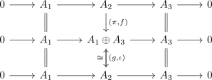

Splitting Lemma
Proposition
Proof
1)  3)
3)
We want to define a map which becomes (in hindsight) an isomorphism
For this consider the endomorphism : It restricts to – the fiber – as .
Therefore define and .
Now it remains to calculate that

is a commutative diagram where the middle maps are isomorphisms
2) 3)
dual to 1) 3)
3) 1), 3) 2)
follows from the retraction of the